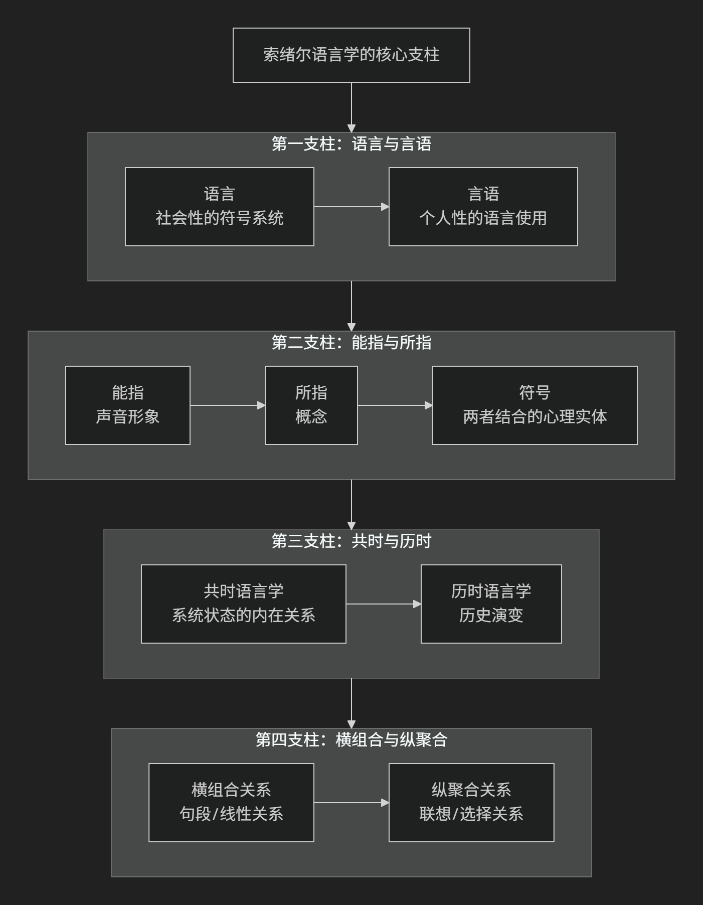

Ferdinand de Saussure
基于费尔迪南·德·索绪尔（Ferdinand de Saussure）现代语言学的核心思想对陈京元博士案件进行评价。
费尔迪南·德·索绪尔是现代语言学之父，也是结构主义思想的奠基人。他的核心思想彻底改变了20世纪人们对语言乃至整个人文科学的看法。虽然他生前著述不多，但其讲授的《普通语言学教程》经由学生整理出版后，产生了革命性的影响。
他的核心思想可以概括为：将语言学从对语言历史演变的琐碎考据中解放出来，确立为一门研究语言内在结构的独立科学。其核心在于将语言视为一个独立的、共时的符号系统，该系统内部各要素的价值由它们之间的相互关系决定。
索绪尔的思想体系主要由以下四大革命性支柱构成，其结构关系如下图所示：

一、语言与言语的区分
这是索绪尔理论最根本的出发点，他严格区分了：
语言：指一个 社会性的、抽象的符号系统，是语言共同体成员共享的语法、词汇和规则的总和。它是 社会的、同质的、相对稳定的。
言语：指 个人对语言系统的具体运用，即每个人在具体情境下说出的具体话语。它是 个人的、异质的、千变万化的。
核心比喻：语言如同象棋的规则，是所有棋手都必须遵守的抽象体系；而言语则如同每一盘具体的棋局，是规则的具体实现。语言学的研究对象应该是“语言”，而非“言语”。
二、符号的任意性与线性
索绪尔将语言符号定义为 能指 和 所指 的结合体，并提出了两个基本原则：
能指：指语言的 声音形象 （如“树”的发音 [shù]）。
所指：指能指所代表的 概念 （如“树”在我们脑中形成的概念，而非现实中的某棵具体的树）。
符号的任意性：这是索绪尔第一原则。 能指和所指之间的联系是任意的、约定俗成的。例如，表示“树”的概念，英语用声音形象 [tri:]，汉语用 [shù]，它们之间没有必然的逻辑联系。这是符号学理论的基石。
符号的线性：能指（语音）在时间上 线性展开，一个接一个地出现。这使得分析符号之间的句段关系成为可能。
三、共时语言学与历时语言学的区分
索绪尔认为，对语言系统状态的研究优先于对其历史演变的研究。
共时语言学：研究 在某一特定时间点上的语言系统，关注系统内部各要素的 逻辑关系和心理关系。例如，研究现代汉语中“父亲”和“母亲”这两个词在系统内的对立关系。
历时语言学：研究语言 在时间上的历史演变。例如，研究“父”这个词从古汉语到现代汉语的读音和意义变化。
核心主张： 共时研究优先于历时研究。要理解一个词的价值和意义，必须将它置于其所在的共时系统中，看它与其他词的关系，而不是追溯它的词源。
四、语言的价值与关系
这是结构主义思想的核心：语言是一个关系系统，要素的价值由差异决定。
价值由关系决定：语言中任何一个符号的价值（意义），都不由其自身决定，而是由它 在系统中与其他符号的差异和对立关系 来界定。
著名例子：
“羊”在英语和法语中的价值不同。英语用 sheep （羊肉）和 mutton （活羊）来区分，而法语只用 mouton 一词概括。因此，sheep 的价值是在与 mouton 的差异中确定的。
就像下棋，一个“车”的价值不在于它本身的材质，而在于它在棋盘规则中与其他棋子（将、马、卒等）的 关系和对立。
两种关系：
横组合关系：指在话语中，各个词按线性顺序排列所产生的关系（如“我 | 爱 | 你”）。
纵聚合关系：指在话语的每个位置，可以相互替换的词之间形成的联想关系（如在“我”的位置可替换为“他”、“她”；在“爱”的位置可替换为“喜欢”、“恨”）。
—
核心要义总结
理论维度 |
核心命题 |
关键概念与贡献 |
|---|---|---|
研究对象 |
严格区分”语言”（系统）与”言语”（使用），语言学应研究前者。 |
语言 vs 言语、社会性、系统性 |
符号理论 |
语言符号是任意的，由”能指”（声音形象）和”所指”（概念）结合而成。 |
符号、能指、所指、任意性、线性 |
研究方法 |
共时研究（系统状态）优先于历时研究（历史演变）。 |
共时语言学、历时语言学 |
系统理论 |
语言是一个价值系统，要素的价值由其在系统中的差异关系决定。 |
价值、关系、差异、横组合关系、纵聚合关系 |
影响与意义
索绪尔的思想影响远远超出了语言学领域，开启了20世纪的“结构主义”思潮：
语言学：奠定了现代结构主义语言学的基石。
符号学：被视为现代符号学的开创者，其理论被应用于分析一切符号系统（如服装、饮食、仪式等）。
人类学：影响了列维-斯特劳斯的结构人类学。
哲学与文艺理论：影响了罗兰·巴特、拉康、福柯等一大批思想家。
总而言之，索绪尔的核心思想在于完成了一场语言学的“哥白尼式革命”： 将研究焦点从孤立的、历史的语言要素，转向了整体的、共时的语言结构系统。 他告诉我们，意义并非预先存在，而是在一个由差异构成的系统中产生的。这一洞见彻底改变了我们看待语言乃至整个文化世界的方式。